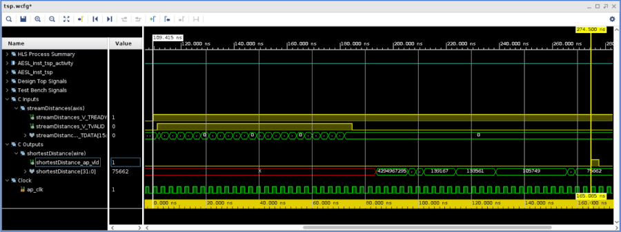

In this section:
We run and describe the RTL/C Cosimulation phase.
2021.1 Vitis™ - The Traveling Salesperson Problem - TutorialSee Vitis™ Development Environment on xilinx.com |
Run the Co-Simulation¶
This phase runs the test vectors of the tesbench on the RTL generated for the tsp block. This is evidently an essential step of the flow in which we will confirm the correctness of the generated RTL code. Given the long runtime of the algorithm on CPUs for higher number of cities compounded by the additional time taken by running an RTL simulator, we are going to set a small number of cities.
Open tsp.h and change the number of cities to 5 (N=5), and rerun C-synthesis.
From the GUI, the RTL/C co-simulation can be started from the same icon toolbar dropdown as before or via the main menu: Solution -> Run C/RTL Cosimulation
From the configuration dialog (see screenshot below),
select “dump traces” all.
Press OK.
Once the simulation completes, see the report coming up in the GUI or select the console window.
As during the C simulation, the result matches the pre-calculated value in the testbench.
The latency of 55 reported after C synthesis is confirmed after this co-simulation and since we created the dump traces we can access the Vivado waveform viewer: click the rightmost icon on the toolbar or from the main menu, go to Solutions -> Open Wave Viewer.
Once the Vivado Waveform viewer comes up, you’ll that the signals are already organized in folders to the testbench and the accelerated function under test.
We can then visualize the latency between the first distance data sent and the final result which is 55 clock cycles which translates to an executon time of 55 x 3.0ns = 165ns:

Close the Waveform viewwer before moving on to the next lab.